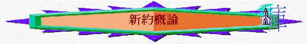

[ Home ] [ 經卷課程 ] [ 查經資料 ] [ 栽培課程 ] [ 事奉培訓 ] [ 聚會資源 ] [ 佈道資源 ] [ 胸懷普世 ] [ 異端異教 ] [ 信息分享 ] [ 專題研究 ] [ 祈禱專題 ] [ 詩歌簡譜 ] [ 動畫之廊 ] [ 輔導關懷 ] [ 站長聯絡 ]
目的
內容
用小組分享形式, 講解新約(每次45mins), 其目的:
1.掌握整體新約中心與結構，從而更易讀新約的書卷。
2.明白每卷書的重點真理與內容。
3. 能從書中真理應用在 生活信仰中。
新約概論1--緒論 新約概論2--四福音 新約概論3--徒、羅、林前 新約概論4--林後、加、弗 新約概論5--腓、西、來 新約概論6--帖前後、彼前後 新約概論7--提前後、提多 新約概論8--門、雅 新約概論9--約一.二.三、猶、啟